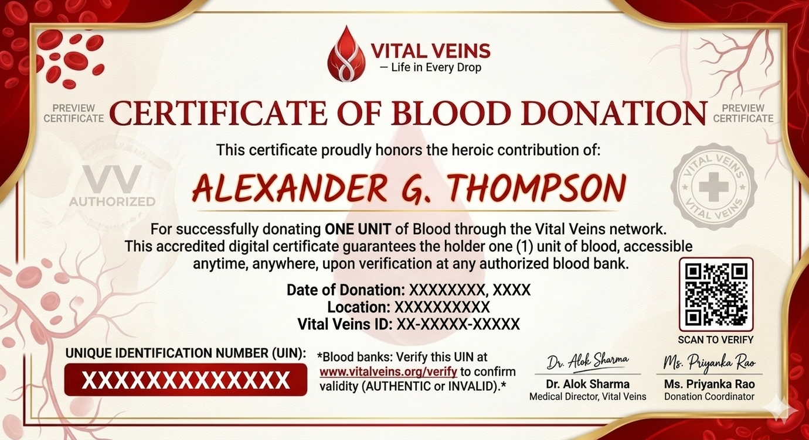

8,956+
Total Donors
Centralized blood donation & emergency coordination
Vital Veins connects donors, recipients, hospitals, and blood banks in a single system to reduce emergency delays and improve outcomes.
Total Donors
Lives Saved
Units Available
Emergency support
Life-saving experiences from donors, recipients, and families who found help fast through Vital Veins.
“I received an urgent notification, donated blood in under an hour, and the very next day the hospital confirmed the transfusion saved a young accident victim.”
“Within minutes of placing a request, a nearby center responded and arranged blood for our mother. Vital Veins made the difference.”
“We saw a 40% reduction in emergency delays after integrating with Vital Veins. Stock updates and donor profiles are easy to manage.”
Explore real-world examples of how donors, recipients, and partner centers are saving lives together.
“I was notified about an urgent need for B+ blood nearby. I donated the same day, and my donation reached the receiver within 3 hours. Knowing I helped save a life was unforgettable.”
“My father needed O- blood immediately after an accident. The platform connected us to the right center in minutes, and we were able to receive the blood without any delay.”
“We used to spend hours calling blood banks. With Vital Veins, we now see availability instantly, and our emergency response time has improved dramatically.”
“I signed up to donate and got a digital certificate after approval. I can now claim blood for future needs or recommend the service to more people in my community.”
“Being a regular donor through Vital Veins helped me keep track of my eligibility and schedule my donations around exams with ease.”
“My son needed A+ blood for surgery. The platform showed available units quickly, and the hospital staff reserved the blood without any confusion.”
“I use Vital Veins every shift now. The blood availability data saves us precious time when treating trauma patients.”
“I shared the platform with my local group. Several donors responded within minutes to urgent requests from nearby families.”
“Stock updates are easier to maintain, and our communication with donors is much faster thanks to Vital Veins.”
“After registering as an O- donor, I received a call for an emergency request and felt proud to help a mother in need.”
“With the app, I immediately knew which center had the required blood type and could route the patient without delays.”
“Vital Veins has become a trusted part of our hospital protocol for urgent blood requests.”
“I donated for the first time after a friend encouraged me to use Vital Veins. The experience was simple and reassuring.”
“Knowledge of blood availability and nearby centers made it easy for me to donate and track my donation certificate.”
“Our workplace blood drive coordinated donors through Vital Veins, and the campaign was a huge success.”
“I used Vital Veins to match donors to an emergency donation camp, and the turnout exceeded our expectations.”
“We needed blood for a local accident victim. The platform pointed us to the nearest blood center, and the process was fast.”
“Getting my e-certificate felt great. I now know I can support the community whenever there is a need.”
“I found the exact O+ blood units our hospital required and was able to bring them immediately.”
“Vital Veins helped us avoid long waits during my daughter’s surgery by locating blood supplies quickly.”
“I received a notification in the morning and donated before work, knowing I could help someone in need that day.”
“The search by location feature helped us find the nearest blood bank immediately.”
“Our inventory matched with active requests better than ever. Now we can prepare for donors and patients in advance.”
“We used this to coordinate donors across cities, and it saved us from manual calls and spreadsheets.”
“The platform connected me with donors in an emergency, and I’m grateful for every response.”
“Blood availability was visible instantly, and the staff helped us reserve the needed unit quickly.”
“I donated on a weekend and received a certificate I can use in the future. The entire process was smooth.”
“Our hospital now relies on Vital Veins for emergency blood coordination more than ever.”
“I was able to choose a nearby center and schedule a donation appointment with just a few clicks.”
“I saw a call for help while on the road and made sure to donate as soon as I reached the city.”
“The request support helped us maintain the right stock during a busy week in the emergency ward.”
“My first donation was guided by the app, and I felt safe because the nearest center had all my details in advance.”
“We spread awareness through the platform and encouraged a wave of volunteers in our neighborhood.”
“Tracking blood stock and arriving donors made our volunteer shift far more effective.”
“I got the exact B- unit in time, and the staff said our request had been pushed directly to nearby donors.”
“I now donate regularly, and the platform’s reminders help me stay eligible and informed.”
“Vital Veins helped us through a critical week by guiding us to multiple centers with available stock.”
“We organized a blood donation drive using Vital Veins’ donor network and saw a stronger response than ever.”
“The system’s fast communication reduced the stress of emergency blood procurement at our city hospital.”
“We could update stock and inform all nearby users in a matter of minutes during a shortage.”
“The app made it easy for me to volunteer and encourage my friends to donate right away.”
“Emergency requests showed me the nearest center clearly, and I could support a patient in a different city.”
“I now have my own digital certificate and feel proud to be part of the saving community.”
“Our family received an urgent call, and the app helped us locate blood quickly without any chaos.”
“I recommend Vital Veins to every parent because it streamlines blood support when it matters most.”
“The user-friendly flow made donating easy even for someone doing it for the first time.”
“We found the right blood type in a few minutes and were able to stop the emergency from getting worse.”
“The platform mobilized donors quickly during a local festival when the need was high.”
“I appreciate how securely the platform handles my data while still letting me help people quickly.”
“The digital certificate capability allows donors to reclaim units later, which is a meaningful incentive.”
“The most important part was the calm communication from the blood center after the request was accepted.”
“Our college blood drive got more volunteers because they could sign up and track everything through the same system.”
“I love that I can search donors and centers by location, especially during city-wide emergencies.”
“I recommended this to my hospital team, and we’re now able to manage urgent blood needs much better.”
“The fast assistance and reduced paperwork save us hours every week in hospital logistics.”
“I received an instant alert for an urgent AB+ need and knew exactly where to donate before dinner.”
“My blood request was addressed within minutes, and the response felt incredibly supportive.”
Direct messaging between users and centers helps confirm availability and schedule donations without paper forms or long waits.
Blood banks monitor inventory and request donors based on blood group demand and regional needs using a shared dashboard.
Donors receive a digital e-certificate after approval. It can be used later to claim one unit of blood anytime from any partner center.

Our network includes hospitals and blood banks with verified stock and fast response times.
Nearest donor center with active stock updates.
Supports urgent requests and fast transport coordination.
Provides free consultation and safe donation scheduling.
Find the right blood type and nearest center in your area.
Auto-selected based on your location.
You are approved to claim one unit of blood from any partner center.
Valid for 1 unit of blood from any partner center.
Search and filter blood banks in your area by blood type.
Numbered markers match the list below.
Browse high-rated donation centers and blood banks near you.
We will show the closest center based on your location.
Marker 1 is the closest center in the list.
Your booking details will appear here.
-
-
-
Pending center confirmation
Your certificate becomes active as soon as the center confirms the completed donation.
Valid for 1 unit of blood from any partner center.